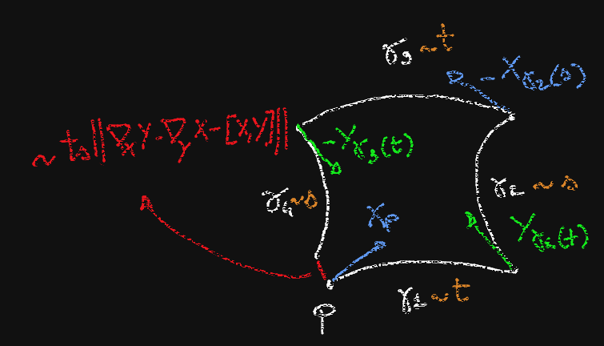

Once we have a connection on a manifold $M$, we define the parallel transport along a curve: if $\gamma:I\to M$ is such that $\gamma(a)=p$, $\gamma(p)=q$, for each $X_p\in T_pM$ we have a unique vector-field $X$ along $\gamma$such that $X(a)=X_p$ and $dX/dt\in HTM$ at all points or, equivalently, $\nabla_{\dot{\gamma}}X\equiv 0$. Then $$\tau_{pq}^\gamma X_p=X_{\gamma(b)}\;.$$
Now, consider two vector-fields $X,Y$ defined in a neighborhood of $p$; given $t,s>0$ very small, let
Note that the four curves do not necessarily close in a "parallelogram"; if we set up local coordinates where $p$ is the origin, the point $\gamma_4(s)$ is a function of $X$, $Y$, $t$, $s$ whose coordinates have the following Taylor expansion in $t,s$ is$
$$x^j(t,s)=ts(\Gamma^{j}_{ih}X^iY^h-\Gamma^{j}_{ih}Y^iX^h)+o(t^2+s^2)=ts(\Gamma^j_{ih}-\Gamma^j_{hi})X^iY^h + o(t^2+s^2)\;.$$
Therefore, the four curve "close" at second order if and only if $\Gamma^j_{ih}=\Gamma^j_{hi}$, so if and only if the covariant derivative of the connection is torsion free, i.e. $\nabla_XY-\nabla_YX-[X,Y]=0$.
